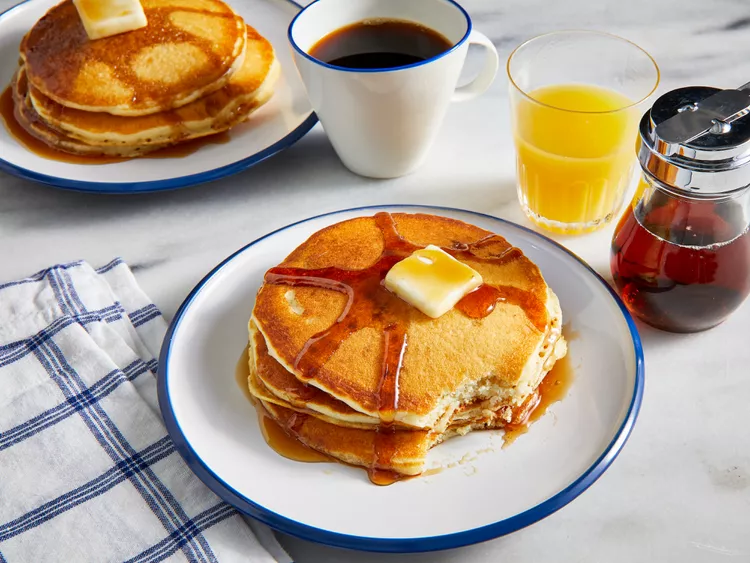

Pancakes

Description
Learn how to make originial pancakes just like they do at Internaiton House of Pancakes!
Ingredients:
- 1 ¼ cups buttermilk
- ¼ cup vegetable oil
- ½ teaspoon vanilla extract
- ¼ cup white sugar
- 1 ¼ cups all-purpose flour
- 1 ½ teaspoons baking powder
- 1 dash salt
- 1 egg
- 1 teaspoon lemon juice
- 1 tablespoon butter, or as needed
Steps:
- Gather all ingredients
- Mix buttermilk, vegetable oil, and vanilla in a bowl; stir in sugar. Whisk in flour, baking powder, baking soda, and salt, combining the batter with just a few strokes to moisten. Leave the lumps.
- Whisk egg and lemon juice together in a separate bowl; gently stir into the batter. Refrigerate the batter for at least 30 minutes, up to 1 hour.
- Heat a large skillet over medium heat and grease with the butter. Pour 1/3 cup of batter per pancake into the skillet and cook until bubbles appear on the surface, about 2 minutes.
- Flip with spatula and brown the other side, about 2 more minutes.
- Enjoy!